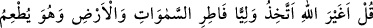
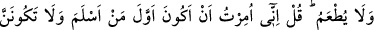
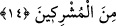

kadir, gecedir. Gündüzlerde bunun bir benzeri yoktur.
Allah dostlarından bazıları gece olduğunda: “İşte, Allah’ın yarattıklarının en
muazzamı geldi.” derlerdi.
Fakir de derim ki: Gecenin esrarı, onda münâcâtın tadı, halvet ve yalnızlığın lezzeti
kendisine perdelenen kimseye gündüz daha sevgilidir. Nitekim zâhir uleması (ulemâ-i
rüsûm) böyledir. Görmez misin ki Nahivci Sa’leb şöyle demiştir: “Dostlarımla daha
çok beraber olmak için, gecelerin de gündüz olmasını arzu ederdim.” Bu söz, onun
kalabalığa ve onlarla beraber olmaya ne kadar düşkün olduğunu gösteren bir hırsın
ifadesidir.
Ne var ki hiçbir ilim ehli müctehidlerden üstün olamaz. Görmez misin ki İmam-ı
A’zam hem ders verir, hem de geceleri ihyâ ederdi.
Allah’ın Hâfız’a verdiği saâdet hazinesi
Geceleri duanın, seherleri evrâdın bereketindendir
Yukarıda anlatılanlardan, gecenin gündüzden daha faziletli olduğu anlaşılmaktadır.
Bil ki, her şeyi yaratan Allah’tır. Gece ile gündüz için ayrı ayrı görevli melekler var
etmiştir. Güneş doğarken ve batarken gündüzün aydınlığı için görevli bir melek, gecenin
karanlığı için görevli bir melek vardır.
14. De ki: Gökleri ve yeri yoktan var eden, yedirdiği halde yedirilmeyen
Allah’tan başkasını mı dost edineceğim! De ki: Bana müslüman olanların ilki olmam
emredildi ve sakın müşriklerden olma! (denildi).
Ey Muhammed, Mekkeli kâfirlere “de ki:” Bu âyet, onların Hz. Peygamber (s.a.)’i
şirke ve atalarının dînine çağırdıkları vakit inmiştir.
“Gökleri ve yeri yoktan var eden” Onları ilk olarak var (icad) eden, benzeri yokken
yaratan, hâl böyleyken “yediren, fakat yedirilmeyen” Yani O, yaratılanların rızkını
verir. Ancak kendisi rızka muhtaç değildir.
Yemeğin husûsî olarak zikredilmesi, yaratılanların ona şiddetle ihtiyaç duydukları
içindir.
“Allah’tan başka dost mu edineyim?” Yani, başka bir mabud edinerek ya da Allah’a
ortak koşmak sûretiyle başka dost mu edineyim? Oysa Allah beni, ezelde kendi zatına
dost edinmiş, bana “habîbim” demiştir.”
Nitekim Rasûlullah (s.a.) şöyle buyurmuştur: “Eğer Allah’dan başka bir dost